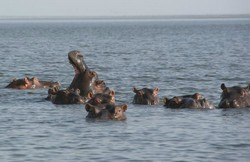

Categorie(s):
Fleuve,
Lac
Lac maga
Dans le département du Mayo-Danay, le lac artificiel de Maga s’étend sur près de 25 km de long. Il est ravitaillé par les déversements des eaux du Logone et les apports du Mayo Guerléo, des Mayos Boula et Tsanaga, des Monts Mandaras et des eaux de ruissellement de son bassin versant. Créé en 1979, le lac a une capacité de 600 millions de m3 pour une superficie de 39 000 ha. Le lac de Maga assure l’irrigation de la région et permet la culture du riz. Particulièrement poissonneux, on y pêche la carpe, le silure, le poisson ballon et le capitaine.
L'endroit est également un lieu privilégié pour observer les oiseaux évalués à environ 20.000, et les hippopotames. Pour les voir de plus près il y a la possibilité de prendre une pirogue à moteur au bord du lac. Le tour sur le lac est possible en s’adressant aux nombreux pécheurs présents près de l’embarcadère, mais le plus simple est de s’adresser à l'hôtel-restaurant Safari Danay qui organise un tour complet du lac avec visite des villages de pécheurs et bien sûr la découverte des hippopotames.
Pour y accéder : A partir de Maroua, prendre la direction de Bogo vers l’Est, puis dans Guirvidig prendre la direction de Pouss. Ce parcours d’environ 74 Km se partage entre piste en assez bon état et route bitumée entre Bogo et Guirvidig. De Guirvidig à Maga, vous longez le barrage de retenue du lac de Maga.